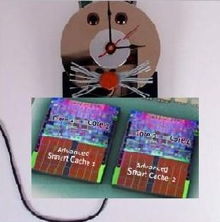

Projects on Software Timing/Performance Validation
(offered by Abhik Roychoudhury)
1. Timing Analysis and Optimization for Multi-cores (Current)
[Description]

Timing analysis is a critical problem for real time embedded systems. Giving a tight estimate is important so that real time tasks should meet the expected deadline. With the advent of multi-core technologies, giving a tight time estimate becomes an increasingly difficult problem. While there had been extensive research developments for single processor systems in this area, very few of them concentrate on multiple cores. The safe solution developed for single processor systems may not be safe at all in presence of multiple cores due to the timing anomaly problem. At the same time giving a tighter estimate is also important considering the effect of all the processing elements. Our goal is to develop analysis methods for timing estimate as well as develop techniques for efficient usage of system resources (e.g. cache memory) in presence of multiple cores. First we want to concentrate on the WCET (Worst Case Execution Time) parameter for a single tasking non-preemptive system. This means that once a thread is run in one core, it cannot be preempted. In this case our aim is to analyze the interference in shared memory hierarchy (e.g. shared L2 cache among all cores) to obtain a tight WCET estimate. Subsequently we want to concentrate on preemptive multi-tasking system executing in multiple cores. One of the main parameter to be analyzed here is cache related preemption delay (CRPD). Lastly we want to perform compile time analysis technique to optimize the performance of programs executing in multiple cores. Specifically we want to concentrate on efficient use of memory for concurrent embedded programs in multiple cores leading to optimized WCET and/or average case execution time (ACET).
[Project Webpage]
[PhD Student]
Sudipta Chattopadhyay (current), Vivy Suhendra (graduated)
[Sample Publications]
A Unified WCET Analysis Framework for Multi-core Platforms
Scalable and Precise Refinement of Cache Timing Analysis via Model Checking ( pdf )
Sudipta Chattopadhyay and Abhik Roychoudhury
IEEE Real-time Systems Symposium (RTSS) 2011. Best paper Award nomination.
Bus-Aware Multicore WCET Analysis through TDMA Offset Bounds
Timon Kelter, Heiko Falk, Peter Marwedel, Sudipta Chattopadhyay and Abhik Roychoudhury
23rd Euromicro Conference on Real-time Systems (ECRTS) 2011.
Static Bus Schedule aware Scratchpad Allocation in Multiprocessors [
Paper
]
Sudipta Chattopadhyay and Abhik Roychoudhury
ACM SIGPLAN/SIGBED Conference on Languages, Compilers and Tools for Embedded
Systems (LCTES) 2011.
Modeling
Shared Cache and Bus in Multi-core
Platforms for Timing Analysis (
pdf )
Sudipta Chattopadhyay, Abhik
Roychoudhury and Tulika Mitra
13th International Workshop
on Software and Compilers for Embedded Systems (SCOPES) 2010.
Timing Analysis of Concurrent
Programs Running on Shared Cache Multi-cores (
pdf )
Yan Li, Vivy Suhendra, Yun Liang, Tulika Mitra and
Abhik Roychoudhury
IEEE Real-time System Symposium (RTSS) 2009.
2. Timing Analysis of Model-driven Software (Current)
[Description]
Real-time embedded systems are ubiquitous, appearing in diverse application domains such as avionics, automobiles, and consumer electronics. For safety-critical embedded systems,system design from high-level behavioral models is of paramount importance. In such design flows,the entire system description is developed as a high-level model and code is automatically generated from these models. In this project, we develop methodologies/tools to support timing analysis at the model level for model-based design of real-time control software. In particular, we plan to pursue the following research directions in this project.
[Project Webpage]
[PhD Student]
Ju Lei (graduated), Huynh Bach Khoa.
[Sample Publications]
Timing Analysis of Esterel Programs on General-purpose Multiprocessors
Lei Ju, Bach Khoa Huynh, Abhik Roychoudhury and Samarjit Chakraborty
ACM Design Automation Conference (DAC) 2010.
Context-Sensitive Timing Analysis of Esterel Programs (pdf)
Lei Ju, Bach Khoa Huynh, Samarjit Chakraborty and Abhik Roychoudhury
ACM Design Automation Conference (DAC) 2009, [Short Paper].
Performance Debugging of Esterel Specifications (
pdf )
Lei Ju, Bach Khoa Huynh, Abhik Roychoudhury and Samarjit Chakraborty
ACM Intl. Conference on Hardware/Software Codesign and System Synthesis (CODES+ISSS)
2008.
Schedulability analysis of MSC-based system models
(
pdf )
Lei Ju, Abhik Roychoudhury and Samarjit Chakraborty
IEEE Real-Time and Embedded Technology and Applications Symposium (RTAS) 2008.
3. Worst-case Execution Time Analysis (Still Active)
[Description]
We have built a WCET analyzer Chronos, which performs timing analysis of embedded software through static analysis. In particular, Chronos estimates Worst Case Execution Time (WCET), which is the upper bound on the execution time of a program over all possible data inputs on a specific hardware platform. WCET of a task is an essential input to the schedulability analysis of hard real-time systems. It is difficult to estimate the WCET through simulation for any non-trivial program due to the very large number of possible inputs. Thus static analysis techniques are employed to derive an upper bound on the WCET of a program. One important yet difficult problem for static timing analysis is to model the timing effects of complex micro-architectural features present in modern processors, such as out-of-order execution, branch prediction, and caches. Chronos accurately models various architectural features (including out-of-order execution, branch prediction, instruction cache) and their interactions for WCET analysis.
[PhD Student]
Li Xianfeng (graduated, joined Beijing University, China)
[Sample Publications]
Chronos: A Timing Analyzer for
Embedded Software (pdf)
Xianfeng Li, Yun Liang, Tulika
Mitra and Abhik Roychoudhury
Science of Computer Programming,
Volume 69, December 2007.
Timing Analysis of a Protected Operating System Kernel ( pdf )
Bernard Blackham, Yao Shi, Sudipta Chattopadhyay, Abhik Roychoudhury and Gernot Heiser
IEEE Real-time Systems Symposium (RTSS) 2011.
Scope-aware Data Cache Analysis for WCET Estimation [
Paper, Technical Report with all proofs
]
Bach Khoa Huynh, Lei Ju and Abhik Roychoudhury
17th IEEE Real-time and Embedded Technology and Applications Symposium (RTAS)
2011. Best paper Award nomination.
Unified Cache Modeling for WCET
Analysis and Layout Optimizations (pdf)
Sudipta Chattopadhyay, Abhik
Roychoudhury
IEEE Real-time Systems Symposium (RTSS)
2009.
Modeling Control Speculation for
Timing Analysis (pdf)
Xianfeng Li, Tulika Mitra and
Abhik Roychoudhury
Real-Time Systems Journal, Springer,
29(1), 2005
Modeling Out-of-Order Processors for
WCET Analysis (pdf)
Xianfeng Li, Abhik Roychoudhury
and Tulika Mitra
Real-Time Systems Journal, Springer,
34(3), pg 195-227, 2006
4. Worst-case Execution Time driven Optimizations (Completed)
[Description]
Embedded systems generally include fast
memory on-chip to speed up execution
time. In the presence of real-time
constraints, the concern is to improve
the worst-case execution time (WCET) of
the application. Most systems configure
these memories as caches, whose effect
has to be modeled in the WCET analysis.
Alternatively, software-controlled
caching techniques (locking,
partitioning) are employed to enable
tighter WCET estimation. In the
multiprocessing context, there has not
been much advances in shared cache
analysis. Recent years have seen the
surge in popularity of scratchpad
memory, which has completely predictable
timing behavior. Researches have
investigated methods to select most
beneficial memory blocks to be allocated
into the scratchpad, mostly focusing on
the average-case optimization of
sequential applications.
Our project have looked at scratchpad
allocation techniques specifically
targeted at worst-case performance
optimization. The techniques are coupled
with the WCET analysis routine based on
the
Chronos tool. Following this effort,
we have proposed scratchpad allocation
schemes aimed at minimizing the
worst-case response time of concurrent
applications, taking into account the
effect of process interactions. Still in
the context of multiprocessing, we have
also proposed integrated scratchpad
allocation and task scheduling to
achieve optimal scratchpad utilization.
Finally, complementing the research on
cache-based multiprocessors, we have
evaluated shared cache management
schemes that maintain complete
predictability by combining the cache
locking and partitioning strategies.
[PhD Student]
Vivy Suhendra (graduated, joined Institute of Infocomm Research, Singapore)
[Sample Publications]
WCET
Centric Data Allocation to
Scratchpad Memory (pdf)
Vivy Suhendra, Tulika Mitra,
Abhik Roychoudhury and Ting Chen
IEEE Real-Time Systems Symposium (RTSS)
2005
Scratchpad Allocation for Concurrent
Embedded Software(
Conference version ,
Journal version)
Vivy Suhendra, Abhik
Roychoudhury and Tulika Mitra
ACM Transactions on Programming
Languages and Systems (TOPLAS),
32(4), 2010. Initial Version appeard in
ACM International Conference on
Hardware/Software Codesign and
System Synthesis (CODES+ISSS) 2008